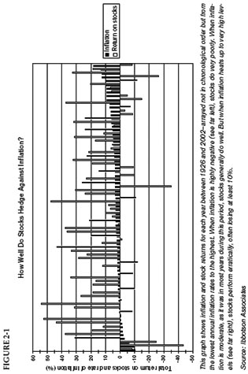

Americans are getting stronger. Twenty years ago, it took two people to carry ten dollars’ worth of groceries. Today, a five-year-old can do it.
—Henny Youngman
I nflation? Who cares about that?
After all, the annual rise in the cost of goods and services averaged less than 2.2% between 1997 and 2002—and economists believe that even that rock-bottom rate may be overstated. 1 (Think, for instance, of how the prices of computers and home electronics have plummeted—and how the quality of many goods has risen, meaning that consumers are getting better value for their money.) In recent years, the true rate of inflation in the United States has probably run around 1% annually—an increase so infinitesimal that many pundits have proclaimed that “inflation is dead.” 2
There’s another reason investors overlook the importance of inflation: what psychologists call the “money illusion.” If you receive a 2% raise in a year when inflation runs at 4%, you will almost certainly feel better than you will if you take a 2% pay cut during a year when inflation is zero. Yet both changes in your salary leave you in a virtually identical position—2% worse off after inflation. So long as the nominal (or absolute) change is positive, we view it as a good thing—even if the real (or after-inflation) result is negative. And any change in your own salary is more vivid and specific than the generalized change of prices in the economy as a whole. 3 Likewise, investors were delighted to earn 11% on bank certificates of deposit (CDs) in 1980 and are bitterly disappointed to be earning only around 2% in 2003—even though they were losing money after inflation back then but are keeping up with inflation now. The nominal rate we earn is printed in the bank’s ads and posted in its window, where a high number makes us feel good. But inflation eats away at that high number in secret. Instead of taking out ads, inflation just takes away our wealth. That’s why inflation is so easy to overlook—and why it’s so important to measure your investing success not just by what you make, but by how much you keep after inflation.
More basically still, the intelligent investor must always be on guard against whatever is unexpected and underestimated. There are three good reasons to believe that inflation is not dead:
What, then, can the intelligent investor do to guard against inflation? The standard answer is “buy stocks”—but, as common answers so often are, it is not entirely true.
Figure 2-1 shows, for each year from 1926 through 2002, the relationship between inflation and stock prices.
As you can see, in years when the prices of consumer goods and services fell, as on the left side of the graph, stock returns were terrible—with the market losing up to 43% of its value. 8 When inflation shot above 6%, as in the years on the right end of the graph, stocks also stank. The stock market lost money in eight of the 14 years in which inflation exceeded 6%; the average return for those 14 years was a measly 2.6%.
While mild inflation allows companies to pass the increased costs of their own raw materials on to customers, high inflation wreaks havoc—forcing customers to slash their purchases and depressing activity throughout the economy.
The historical evidence is clear: Since the advent of accurate stock-market data in 1926, there have been 64 five-year periods (i.e., 1926–1930, 1927–1931, 1928–1932, and so on through 1998–2002). In 50 of those 64 five-year periods (or 78% of the time), stocks outpaced inflation. 9 That’s impressive, but imperfect; it means that stocks failed to keep up with inflation about one-fifth of the time.

Fortunately, you can bolster your defenses against inflation by branching out beyond stocks. Since Graham last wrote, two inflation-fighters have become widely available to investors:
REITs. Real Estate Investment Trusts, or REITs (pronounced “reets”), are companies that own and collect rent from commercial and residential properties. 10 Bundled into real-estate mutual funds, REITs do a decent job of combating inflation. The best choice is Vanguard REIT Index Fund; other relatively low-cost choices include Cohen & Steers Realty Shares, Columbia Real Estate Equity Fund, and Fidelity Real Estate Investment Fund. 11 While a REIT fund is unlikely to be a foolproof inflation-fighter, in the long run it should give you some defense against the erosion of purchasing power without hampering your overall returns.
TIPS. Treasury Inflation-Protected Securities, or TIPS, are U.S. government bonds, first issued in 1997, that automatically go up in value when inflation rises. Because the full faith and credit of the United States stands behind them, all Treasury bonds are safe from the risk of default (or nonpayment of interest). But TIPS also guarantee that the value of your investment won’t be eroded by inflation. In one easy package, you insure yourself against financial loss and the loss of purchasing power. 12
There is one catch, however. When the value of your TIPS bond rises as inflation heats up, the Internal Revenue Service regards that increase in value as taxable income—even though it is purely a paper gain (unless you sold the bond at its newly higher price). Why does this make sense to the IRS? The intelligent investor will remember the wise words of financial analyst Mark Schweber: “The one question never to ask a bureaucrat is ‘Why?’” Because of this exasperating tax complication, TIPS are best suited for a tax-deferred retirement account like an IRA, Keogh, or 401(k), where they will not jack up your taxable income.
You can buy TIPS directly from the U.S. government at www. publicdebt.treas.gov/of/ofinflin.htm, or in a low-cost mutual fund like Vanguard Inflation-Protected Securities or Fidelity Inflation-Protected Bond Fund. 13 Either directly or through a fund, TIPS are the ideal substitute for the proportion of your retirement funds you would otherwise keep in cash. Do not trade them: TIPS can be volatile in the short run, so they work best as a permanent, lifelong holding. For most investors, allocating at least 10% of your retirement assets to TIPS is an intelligent way to keep a portion of your money absolutely safe—and entirely beyond the reach of the long, invisible claws of inflation.